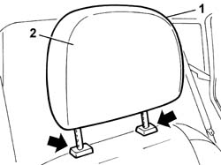

7045B10 l/h or r/h front seat head restraint - r+r
- Path
- Procedures > 70 FITTINGS > 7045 FRONT SEATS > 7045B front seat head restraint/arm rest > 7045B10 l/h or r/h front seat head restraint - r+r
- Kind
- repair procedure (removal / refitting; the operation number is the code)
- Applies to
- all engines; all production periods
- Interactive page
- https://sloeber94.github.io/elrnDB-fPnd/en/#/2753253
Applies to: all engines; all production periods
 Removing
Removing
 Refitting
Refitting1. Press at the points shown by the arrows in order to relese the pins for the head restraint from the guide and retaining bushes.
2. Remove the front seat head restraint.

Applies to: all engines; all production periods
Refitting
RemovingFit the front seat head restraint, inserting the pins in the special housings in the bushes and pushing downwards until the pins are secured in the attachment in the bushes.
Check that the head restraint is correctly fitted, raising it and checking that it does not slip out.